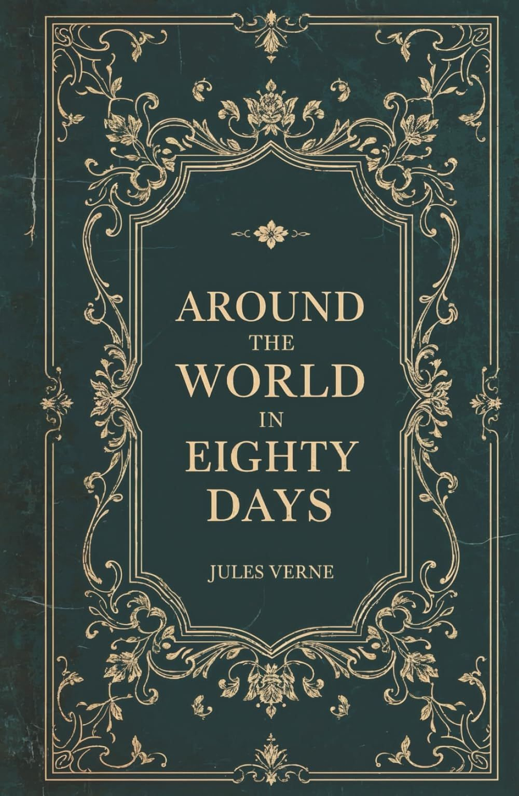

Author: Jules Verne
Category: Adventure
Book ID: BOK-001
Rating: 4.8/5 ⭐
Status: Available
"Around the World in Eighty Days" is an adventure novel by the French writer Jules Verne. In the story, Phileas Fogg of London and his newly employed French valet Passepartout attempt to circumnavigate the late Victorian world in 80 days on a wager set by his friends at the Reform Club.